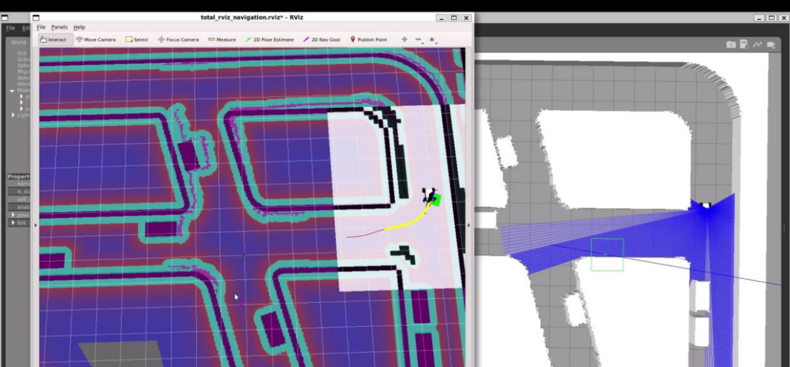
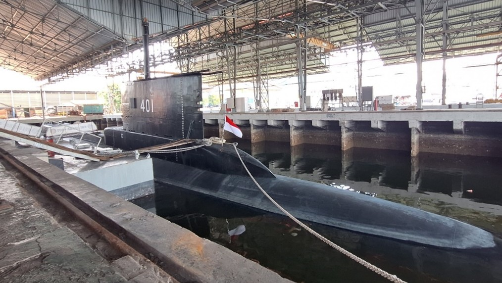
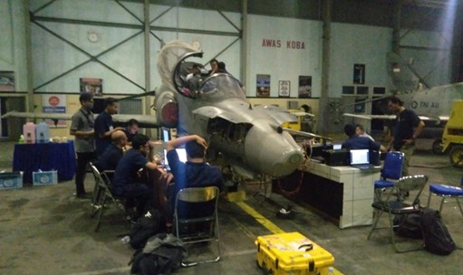
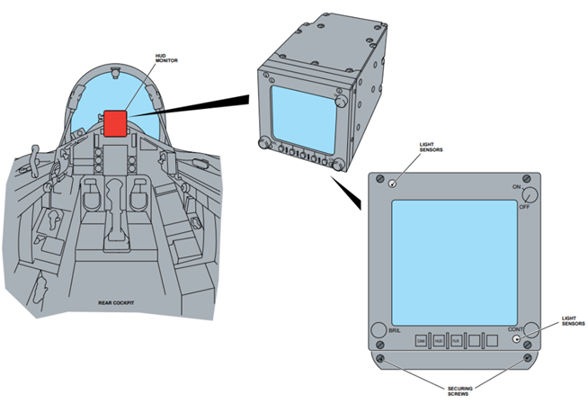
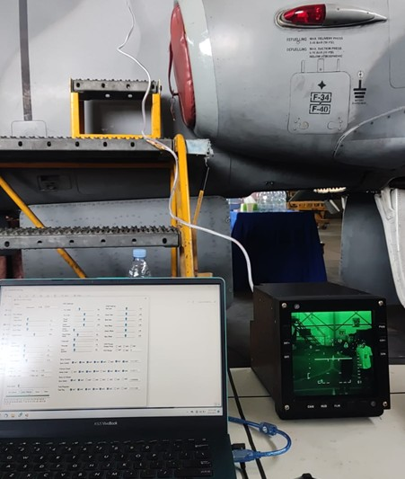

About
A highly motivated and enthusiastic person with interest in various aspects of robotics, including Embedded Systems, Automation, Electronics Design, IoT, DSP, FPGA, Computer Vision, Robot Operating System (ROS/ROS2) and Robotics Simulation. Holds a track record of winning several national competitions and possesses prior experience in research and development.
Implementing Model Predictive Control (MPC) on Ackermann Drive Robot for Autonomous Vehicle Simulation on ROS Gazebo
I've tried implementing Model Predictive Control (MPC) on a simulated Ackermann drive robot described in URDF (Universal Robot Description Format). This allows the robot to predict future states and adjust its path accordingly. Utilizing the Robot Operating System (ROS), the robot navigates through dynamic environments using Gazebo for 3D simulation and RViz for visualization.
The robot relies on a Lidar sensor to understand its surroundings, spotting obstacles and other simulation-vehicles . It also uses odometry through dead reckoning to know its exact location amidst the chaos.
Through this project, I aim to show that autonomous navigation in dynamic environments is achievable, obviously with keen perception, smart planning, and accurate modeling, I'm paving the way for a future where autonomous vehicles can navigate the world around them effortlessly.
Keywords: MPC, ROS, Path Planning, Ackermann Drive, Autonomous Vehicle, Gazebo, URDF (Universal Robot Description Format)
Projects
Reverse Engineering Command and Weapon-Control Console (CWCC) of CAKRA-401 Submarine
KRI Cakra, a submarine of the 209/1300 type, was manufactured by Howaldtswerke in Kiel, Germany, in 1981. This type of submarine is widely utilized by navies around the world. The difficulty in sourcing spare parts for repairs poses a significant challenge. Therefore, it becomes essential to consider modernizing the submarine system.
Reverse engineering an old device with fully analog signals need to understanding its inner workings. documentation plays a crucial role in the reverse engineering process, especially for an old device with fully analog signals. Any documentation or technical specifications related to the device can provide valuable insights for us. We also utilizing tools like oscilloscopes to analyze signal characteristics, identifying electronic components, and tracing circuit paths on the PCB. Through this process, we recreate the schematic, unravel the function of each component, and, if possible, replicate the circuit for testing purpose.
Keywords: FPGA, Analog Signal, Signal Processing, Vector Monitor
Reengineering Avionics: Rear Cockpit Monitor (RCM) for Hawk 100 Aircraft
The Rear Cockpit Monitor (RCM) on the Hawk 100 aircraft plays a crucial role as a co- pilot aid, enhancing situational awareness during flights. Serving as a Head-Up Display Monitor (HUDMON), the RCM displays video data from the aircraft's camera (CAM) and Head-Up Display (HUD) symbology.
The RCM enables the co-pilot in the rear cockpit to easily monitor critical flight information, including real-time video data and HUD symbology. Its integration into the Hawk 100 cockpit design reflects a commitment to operational efficiency and pilot coordination. The RCM plays a key role in improving situational awareness during flights, ensuring quick and efficient access to essential information for the co-pilot.
My objective is to designing new reliable PCB circuit by considering several safety parameters and military standard requirement also program the FPGA in VHDL language.
Keywords: FPGA, PAL, DSP, DDR-SDRAM, Image Processing
Sound Recognition Using CNN for Broken Motor Detection
Implemented a spectrogram-based sound recognition model on an STM32 microcontroller, enabling real-time fault detection.
Keywords: CNN, FFT, Microcontroller, Signal Processing
Vehicle Controller Unit (VCU) Firmware for Electric Bus
Created reliable VCU firmware for the Merah Putih Electric Bus, featuring CAN bus communication and state machine programming.
Keywords: CAN Bus, Electric Vehicle, Embedded Systems
Experience
Electronics Development Engineer
PT. Infoglobal Teknologi Semesta (Oct 2022 – Apr 2024)
- Reverse engineered avionics and submarine systems.
- Designed PCB layouts and programmed FPGA for advanced signal processing.
- Developed testing tools for avionics hardware and ensured adherence to military standards.
Embedded Programmer (Intern)
PT. Industri Kereta Api (Persero) (Feb 2022 – Jul 2022)
- Developed firmware for electric bus controllers.
- Conducted simulation and testing of control systems using CAN bus protocol.
Skills
- Programming: C/C++, Python, MATLAB, VHDL/Verilog
- Robotics: ROS/ROS2, Gazebo, OpenCV
- Embedded Systems: STM32, FPGA, CAN Bus
- PCB Design: KiCad, Autodesk Eagle
- Machine Learning: TensorFlow, CNNs
Contact
Email: teukuzikrifatahillah@gmail.com
GitHub: tzf230201
LinkedIn: teukuzikrifatahillah